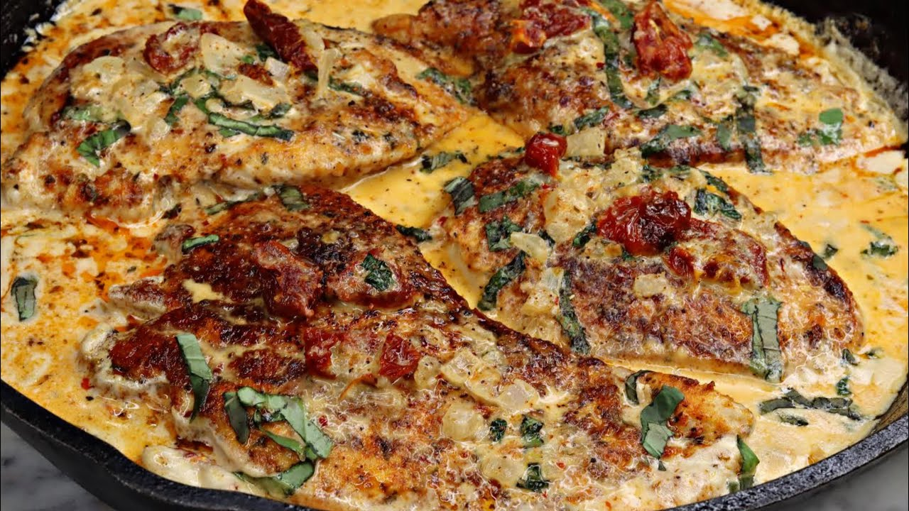

Marry Me Chicken

DESCRIPTION
“Marry Me” Chicken Pasta is one of the best dishes ive made to date! Try it out
INGREDIENTS
- 2 to 3 chicken breasts sliced in half or thin sliced cutlets
- 1 c. All purpose flour
- 1 cup chicken broth
- 1 1/2 cups heavy cream, more if you like “extra sauce”
- 1 cup freshly grated Parmesan
- 1/2 cup sun dried tomatoes
- 1 cup chopped kale/li>
- 2 Tbsp minced garlic
- Salt
- Pepper
- Garlic powder
- Onion powder
- Smoked Paprika
- Cayenne
- Italian Seasoning
- Red pepper Flakes
- 2 Tbsp avocado oil
- 3 Tbsp unsalted butter, divided
STEPS
- In a bowl, combine flour, salt, pepper, garlic powder, onion powder, paprika, cayenne, and Italian seasoning. Use about 1 tsp of each besides the salt, pepper, and cayenne (about 1/2 tsp.). Coat chicken in seasoned flour and set aside.
- In a large skillet over med high heat, add your avocado oil and unsalted butter. Once butter is melted, fry your cutlets on each side for approx. 4-5 minutes. Once golden brown and reached a temp of 165F, remove and set aside.
- Turn heat down in skillet to medium low and add your butter and minced garlic. Cook about 60 seconds until fragrant and add your kale. Sauté for 2-3 minutes before adding your sun-dried tomatoes. Sauté an additional 1-2 minutes, then deglaze with chicken broth and heavy cream. Be sure to keep stirring to ensure everything is well incorporated.
- Bring to a slight boil, reduce heat to low and allow to simmer 5-7 minutes to reduce and thicken.
- Next, add Parmesan cheese, taste to see how much seasoning you want to add, and add Italian seasoning and red pepper flakes. Adjust seasoning to your preference. Place chicken back in skillet once seasoned properly and cover with cream sauce. Serve over pasta of your choice, rice, veggies, or even mashed potatoes… ENJOY!
HOME